Admitted students had an average test score of 960.2, an average writing score of 91.2, and an average GPA of 3.74, all three measures being higher than students who were waitlisted or declined. Admitted students had an average of 2.1yearsof work experience and an average volunteer level of 2.2, similar to students who were waitlisted or declined.
Exploring Student Statistics Based on Admit Decision
For test score, writing score, and GPA there is a visible trend of admitted students having the highest average and declined students having the lowest average.
Code
data %>%mutate(Decision =fct_relevel(Decision, "Decline", "Waitlist", "Admit")) %>%group_by(Decision) %>%summarize("Test Score"=mean(TestScore), "Writing Score"=mean(WritingScore), "GPA"=mean(GPA), "Work Experience"=mean(WorkExp), "Volunteer Level"=mean(VolunteerLevel)) %>%ggplot() +geom_col(aes(y = Decision, x =`Test Score`, fill = Decision)) +scale_fill_manual(values =c("firebrick", "darkgoldenrod1", "yellowgreen")) +theme_minimal() +labs(title ="Admission decision by test score", x ="Average Test Score") +theme(plot.title =element_text(hjust =0.5))
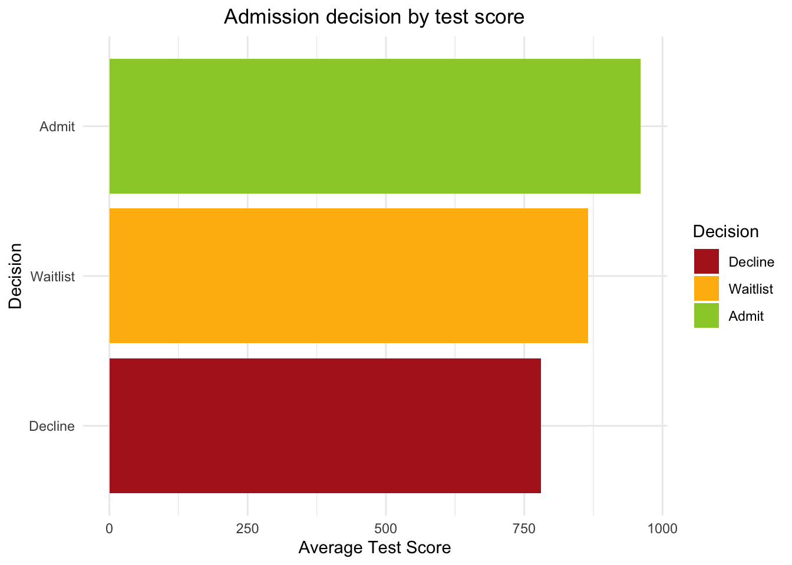
Code
data %>%mutate(Decision =fct_relevel(Decision, "Decline", "Waitlist", "Admit")) %>%group_by(Decision) %>%summarize("Test Score"=mean(TestScore), "Writing Score"=mean(WritingScore), "GPA"=mean(GPA), "Work Experience"=mean(WorkExp), "Volunteer Level"=mean(VolunteerLevel)) %>%ggplot() +geom_col(aes(y = Decision, x =`Writing Score`, fill = Decision)) +scale_fill_manual(values =c("firebrick", "darkgoldenrod1", "yellowgreen")) +theme_minimal() +labs(title ="Admission decision by writing score", x ="Average Writing Score") +theme(plot.title =element_text(hjust =0.5))
Code
data %>%mutate(Decision =fct_relevel(Decision, "Decline", "Waitlist", "Admit")) %>%group_by(Decision) %>%summarize("Test Score"=mean(TestScore), "Writing Score"=mean(WritingScore), "GPA"=mean(GPA), "Work Experience"=mean(WorkExp), "Volunteer Level"=mean(VolunteerLevel)) %>%ggplot() +geom_col(aes(y = Decision, x =`GPA`, fill = Decision)) +scale_fill_manual(values =c("firebrick", "darkgoldenrod1", "yellowgreen")) +theme_minimal() +labs(title ="Admission decision by GPA", x="Average GPA") +theme(plot.title =element_text(hjust =0.5))
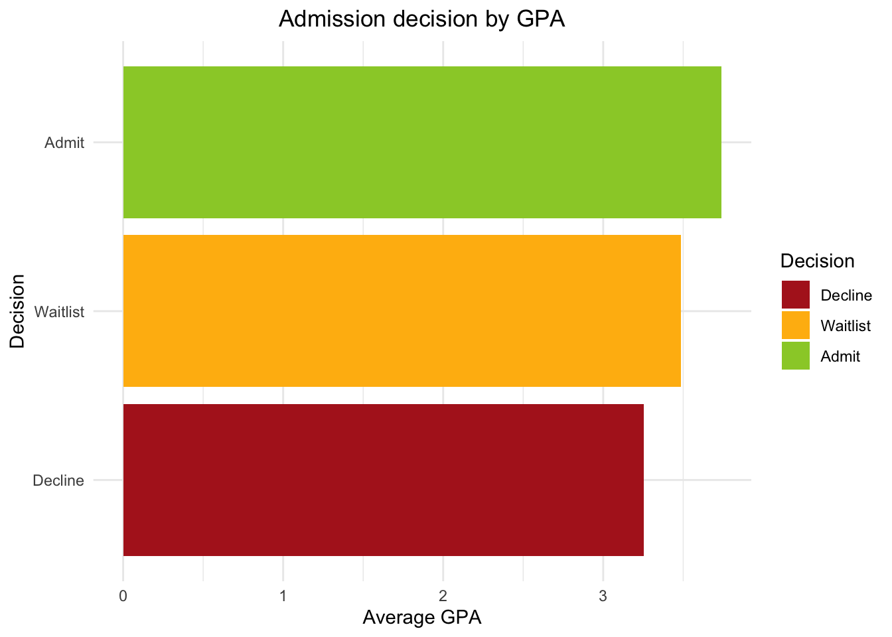
For work experience and volunteer level there is no visible trend.
Code
data %>%mutate(Decision =fct_relevel(Decision, "Decline", "Waitlist", "Admit")) %>%group_by(Decision) %>%summarize("Test Score"=mean(TestScore), "Writing Score"=mean(WritingScore), "GPA"=mean(GPA), "Work Experience"=mean(WorkExp), "Volunteer Level"=mean(VolunteerLevel)) %>%ggplot() +geom_col(aes(y = Decision, x =`Volunteer Level`, fill = Decision)) +scale_fill_manual(values =c("firebrick", "darkgoldenrod1", "yellowgreen")) +theme_minimal() +labs(title ="Admission decision by volunteer level", x ="Average Volunteer Level") +theme(plot.title =element_text(hjust =0.5))
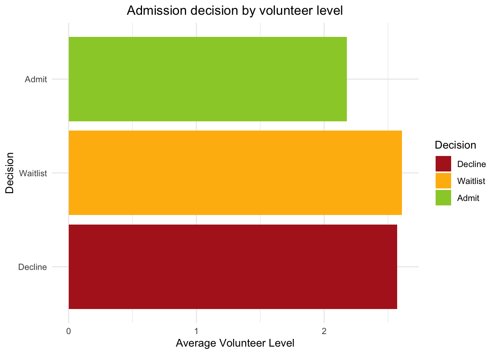
Code
data %>%mutate(Decision =fct_relevel(Decision, "Decline", "Waitlist", "Admit")) %>%group_by(Decision) %>%summarize("Test Score"=mean(TestScore), "Writing Score"=mean(WritingScore), "GPA"=mean(GPA), "Work Experience"=mean(WorkExp), "Volunteer Level"=mean(VolunteerLevel)) %>%ggplot() +geom_col(aes(y = Decision, x =`Work Experience`, fill = Decision)) +scale_fill_manual(values =c("firebrick", "darkgoldenrod1", "yellowgreen")) +theme_minimal() +labs(title ="Admission decision by work experience", x ="Average Work Experience (years)") +theme(plot.title =element_text(hjust =0.5))
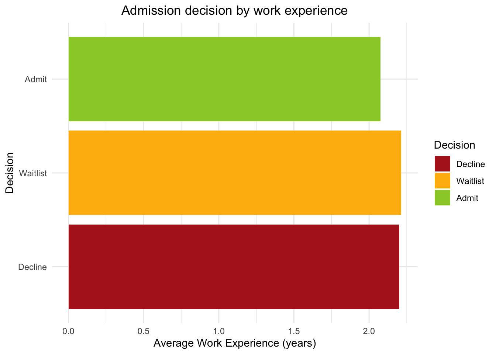
Proportions of Admissions Based on Each Variable
Demographics
Male and female students had identical admit, waitlist, and decline rates.
Code
data$Gender <-as.factor(data$Gender)data %>%mutate(Decision =fct_relevel(Decision, "Decline", "Waitlist", "Admit")) %>%mutate(Gender =ifelse(Gender ==0,"Female","Male")) %>%ggplot() +geom_bar(aes(y = Gender, fill = Decision), position ="fill") +scale_fill_manual(values =c("firebrick", "darkgoldenrod1", "yellowgreen")) +theme_minimal() +labs(title ="Admission proportion by gender", x ="Proportion") +theme(plot.title =element_text(hjust =0.5))
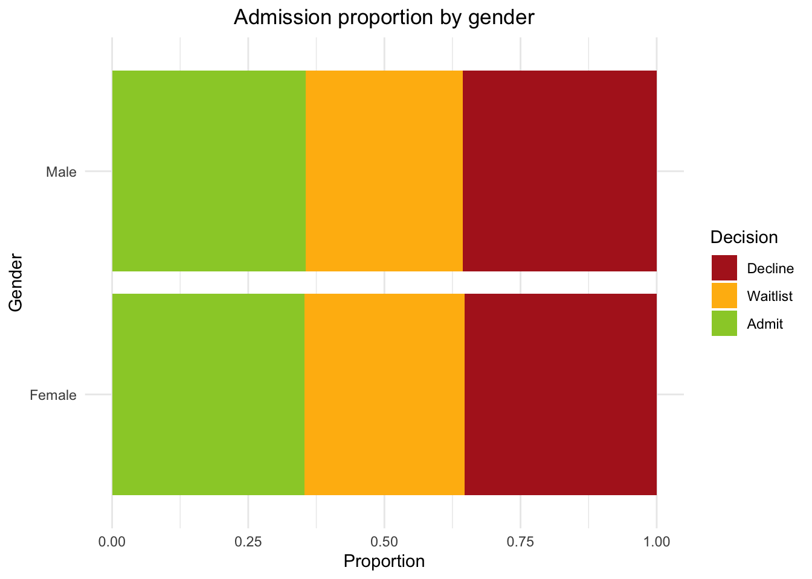
There are differences in admit, waitlist, and decline rates between states.
Code
data %>%mutate(Decision =fct_relevel(Decision, "Decline", "Waitlist", "Admit")) %>%ggplot() +geom_bar(aes(y = State, fill = Decision), position ="fill") +scale_fill_manual(values =c("firebrick", "darkgoldenrod1", "yellowgreen")) +theme_minimal() +labs(title ="Admission proportion by state", x ="Proportion") +theme(plot.title =element_text(hjust =0.5))
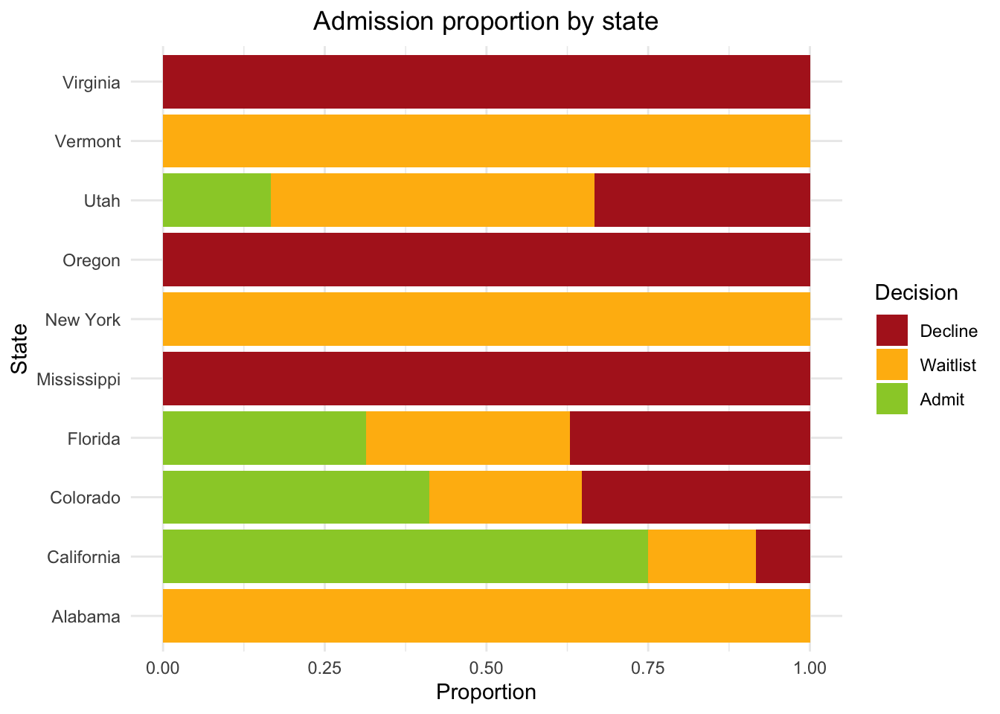
Scores
The students with the highest GPAs had the highest rates of admission to the internship. All students with GPAs of 3.9 or greater were admitted while the majority of students with GPAs of 3.6 or higher were admitted. No students with GPAs below 3.5 were admitted.
Code
data %>%mutate(Decision =fct_relevel(Decision, "Decline", "Waitlist", "Admit")) %>%mutate(GPA =ifelse(GPA >=3.9,"3.9+",ifelse(GPA >=3.8,"3.8-3.9",ifelse(GPA >=3.7,"3.7-3.8",ifelse(GPA >=3.6,"3.6-3.7",ifelse(GPA >=3.5,"3.5-3.6",ifelse(GPA >=3.4,"3.4-3.5",ifelse(GPA >=3.3,"3.3-3.4",ifelse(GPA >=3.2,"3.2-3.3",ifelse(GPA >=3.1,"3.1-3.2",ifelse(GPA >=3.0,"3.0-3.1", "3.0 or Lower"))))))))))) %>%ggplot() +geom_bar(aes(y = GPA, fill = Decision), position ="fill") +scale_fill_manual(values =c("firebrick", "darkgoldenrod1", "yellowgreen")) +theme_minimal() +labs(title ="Admission proportion by GPA", x ="Proportion") +theme(plot.title =element_text(hjust =0.5))
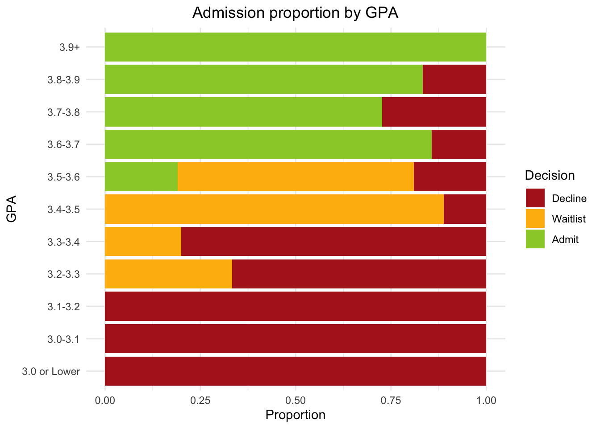
All students that scored above 900 on the test were admitted and all students that were waitlisted scored between 800 and 900.
Code
data %>%mutate(Decision =fct_relevel(Decision, "Decline", "Waitlist", "Admit")) %>%mutate(TestScore =ifelse(TestScore >=900,"900 or higher",ifelse(TestScore >=800,"800 to 900","799 or lower"))) %>%ggplot() +geom_bar(aes(y = TestScore, fill = Decision), position ="fill") +scale_fill_manual(values =c("firebrick", "darkgoldenrod1", "yellowgreen")) +theme_minimal() +labs(title ="Admission proportion by test score", x ="Proportion", y ="Test Score") +theme(plot.title =element_text(hjust =0.5))
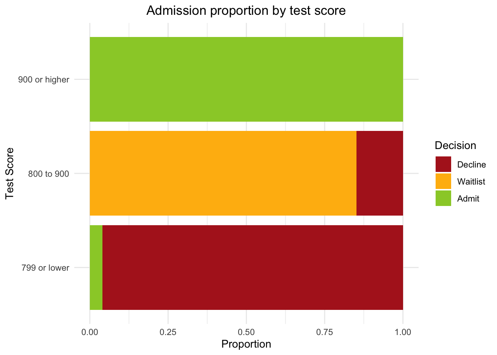
All students with a writing score greater than 90 were admitted while the majority of students with a writing score below 90 were waitlisted or declined.
Code
data %>%mutate(Decision =fct_relevel(Decision, "Decline", "Waitlist", "Admit")) %>%mutate(WritingScore =ifelse(WritingScore >=90,"90 or higher",ifelse(WritingScore >=80,"80 to 90","79 or lower"))) %>%ggplot() +geom_bar(aes(y = WritingScore, fill = Decision), position ="fill") +scale_fill_manual(values =c("firebrick", "darkgoldenrod1", "yellowgreen")) +theme_minimal() +labs(title ="Admission proportion by writing score", x ="Proportion", y ="Writing Score") +theme(plot.title =element_text(hjust =0.5))
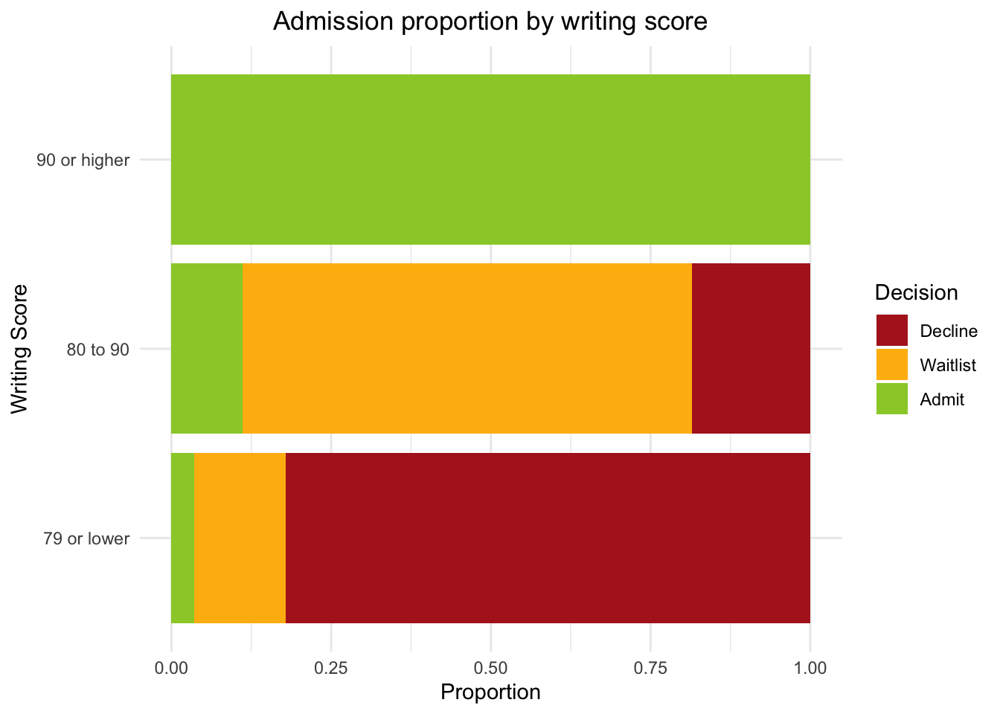
Experience
There is no visible trend when it comes to admit rates and work experience or volunteer level.
Code
data %>%mutate(Decision =fct_relevel(Decision, "Decline", "Waitlist", "Admit")) %>%ggplot() +geom_bar(aes(y = VolunteerLevel, fill = Decision), position ="fill") +scale_fill_manual(values =c("firebrick", "darkgoldenrod1", "yellowgreen")) +theme_minimal() +labs(title ="Admission proportion by volunteer level", x ="Proportion", y ="Volunteer Level") +theme(plot.title =element_text(hjust =0.5))
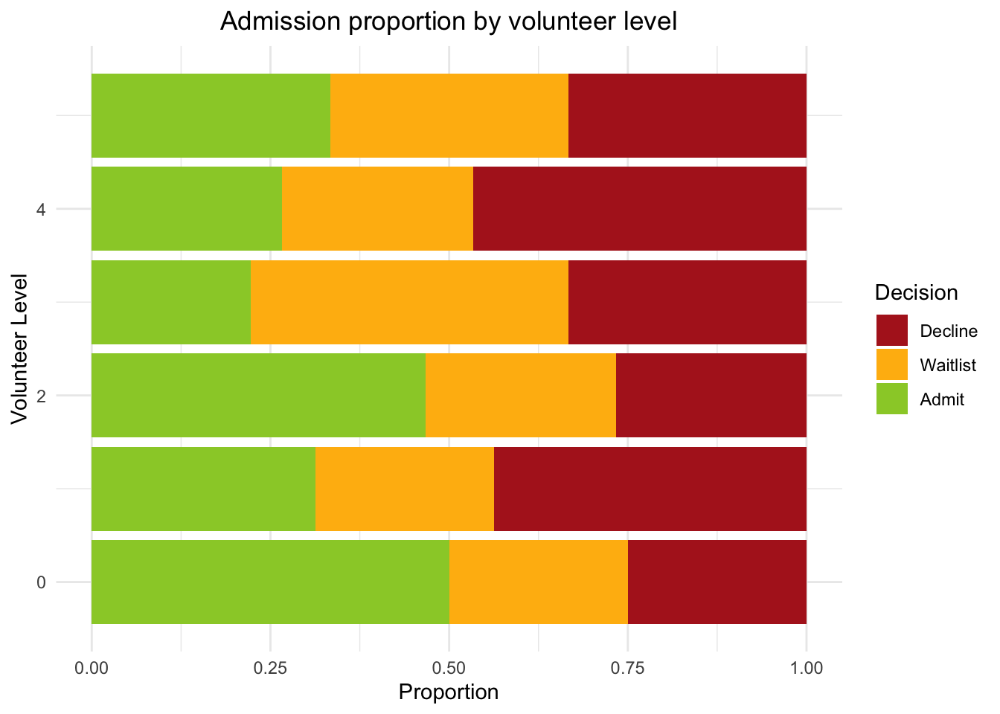
Code
data$WorkExpquintile <-ntile(data$WorkExp, 5)data %>%mutate(Decision =fct_relevel(Decision, "Decline", "Waitlist", "Admit")) %>%ggplot() +geom_bar(aes(y = WorkExpquintile, fill = Decision), position ="fill") +scale_fill_manual(values =c("firebrick", "darkgoldenrod1", "yellowgreen")) +theme_minimal() +labs(title ="Admission proportion by work experience", x ="Proportion", y ="Work Experience (in quintiles)") +theme(plot.title =element_text(hjust =0.5))
The most strongly correlated variables are test score, GPA, and writing score.
Code
melted_corr_mat <-melt(corr_mat)melted_corr_mat <- melted_corr_mat %>%mutate(row =as.numeric(factor(Var1, levels =colnames(corr_mat))),col =as.numeric(factor(Var2, levels =colnames(corr_mat)))) %>%filter(row >= col)ggplot(data = melted_corr_mat, aes(x=Var1, y=Var2,fill=value)) +geom_tile() +theme_minimal() +labs(title ="Correlation between all variables", x ="Variable 1", y ="Variable 2") +theme(plot.title =element_text(hjust =0.5)) +scale_fill_gradient(low ="white", high ="lightblue")
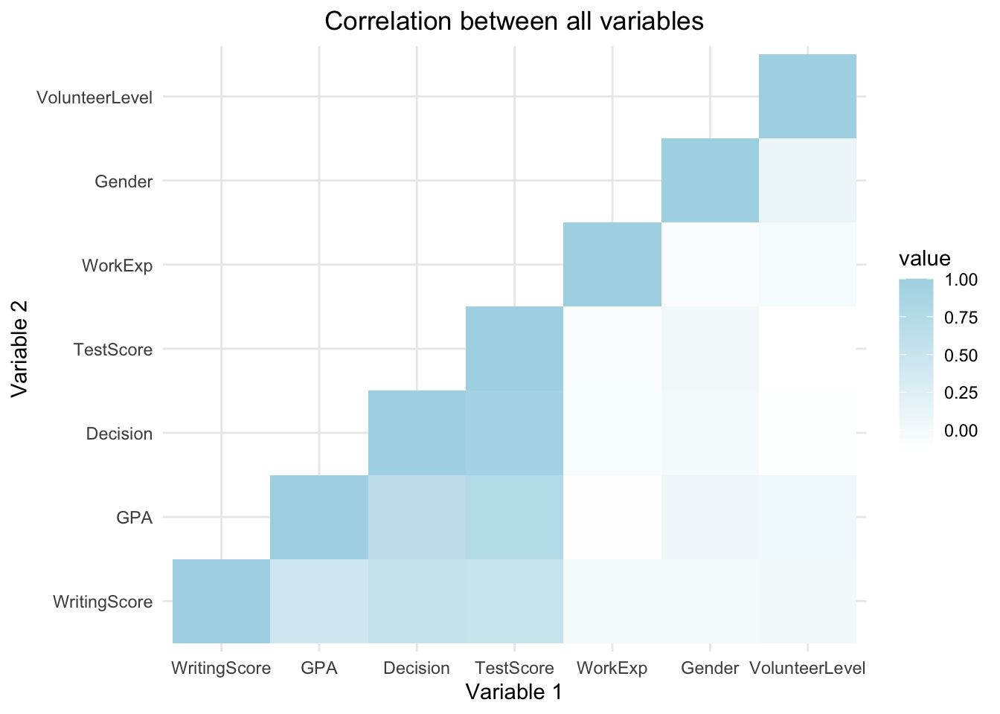
Relationship Between Test Score and Other Variables
Demographics
Average test score does not differ for male and female students.
Code
data %>%group_by(Gender) %>%summarize(`Test Score`=mean(TestScore)) %>%ggplot() +geom_col(aes(x = Gender, y =`Test Score`), fill ="grey70") +theme_minimal()
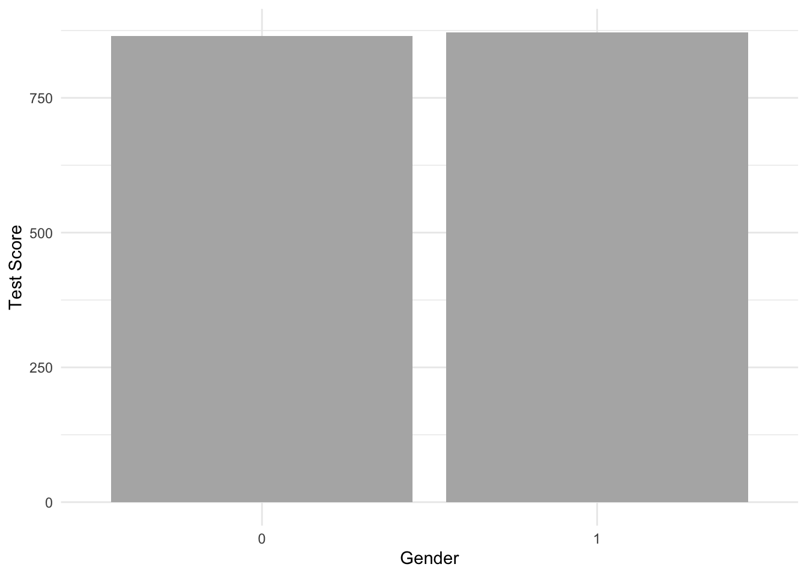
The three states with the highest test score averages (California, Florida, and Colorado) also had the highest admit rates for students.
Code
data %>%group_by(State) %>%summarize(`Test Score`=mean(TestScore), `Percent Admitted`=mean(Decision =="Admit")) %>%mutate(State =fct_reorder(State, `Test Score`)) %>%ggplot() +geom_col(aes(x = State, y =`Test Score`, fill =`Percent Admitted`)) +scale_fill_gradient(low ="grey80", high ="yellowgreen") +theme_minimal() +coord_flip()
Scores
Code
data %>%mutate(Decision =fct_relevel(Decision, "Admit", "Waitlist", "Decline")) %>%ggplot() +geom_point(aes(x=TestScore, y=GPA, color = Decision)) +scale_color_manual(values =c("yellowgreen", "darkgoldenrod1", "firebrick")) +theme_minimal() +theme(plot.title =element_text(hjust =0.5)) +labs(title ="GPA and Test Score", x ="Test Score")
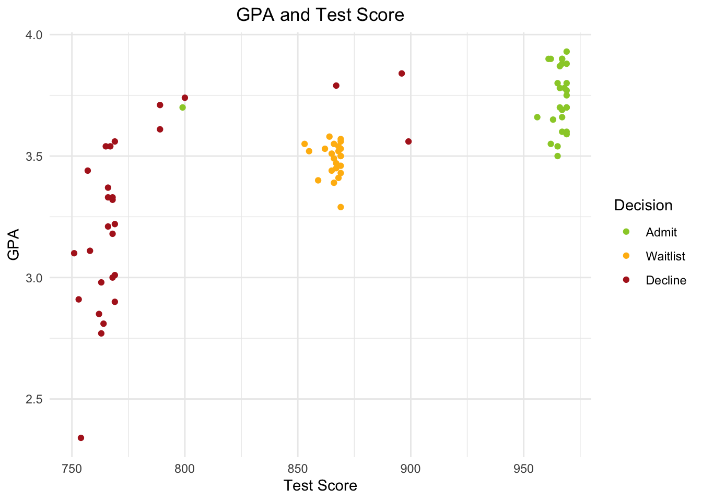
There is one student with a low test score and high GPA who was admitted. All other admitted students were in the highest band of test scores (above 950).
Code
data %>%mutate(Decision =fct_relevel(Decision, "Admit", "Waitlist", "Decline")) %>%ggplot() +geom_point(aes(x=TestScore, y=WritingScore, color = Decision)) +scale_color_manual(values =c("yellowgreen", "darkgoldenrod1", "firebrick")) +theme_minimal() +theme(plot.title =element_text(hjust =0.5)) +labs(title ="Writing Score and Test Score", x ="Test Score", y ="Writing Score")
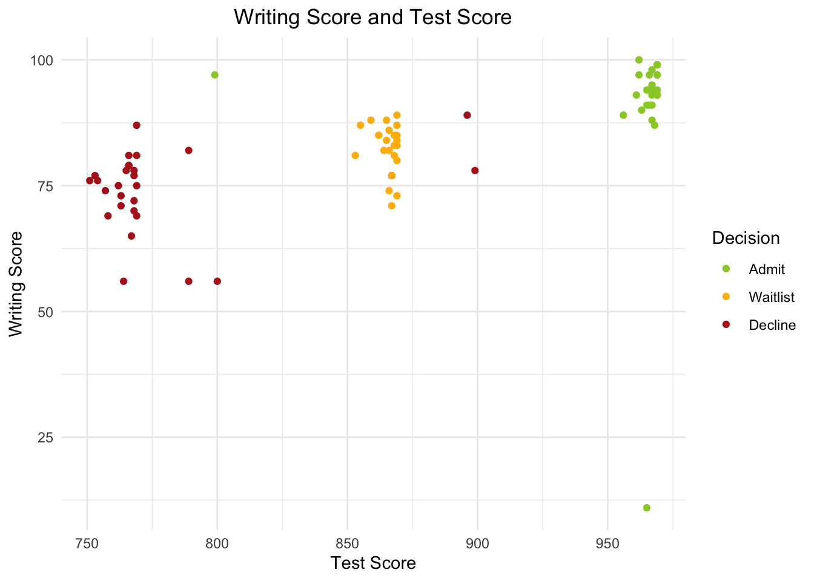
This student also has a high writing score and is the only student with a low test score and high writing score to be admitted.
Experience
Code
data %>%mutate(Decision =fct_relevel(Decision, "Admit", "Waitlist", "Decline")) %>%ggplot() +geom_point(aes(x=TestScore, y=WorkExp, color = Decision)) +scale_color_manual(values =c("yellowgreen", "darkgoldenrod1", "firebrick")) +theme_minimal() +theme(plot.title =element_text(hjust =0.5)) +labs(title ="Work Experience and Test Score", x ="Test Score", y ="Work Experience (years)")
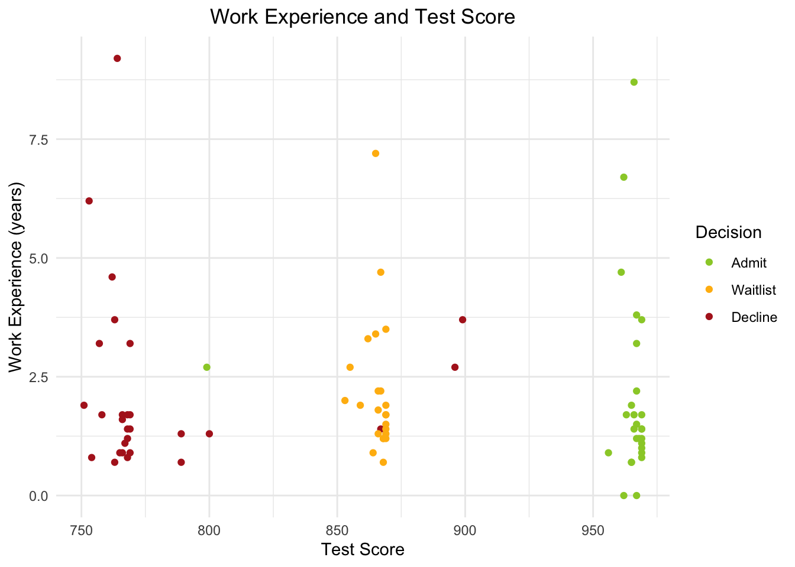
Students with a wide range of work experiences were admitted, waitlisted, and declined. There does not appear to be a relationship between work experience and test score.
Code
data %>%mutate(Decision =fct_relevel(Decision, "Admit", "Waitlist", "Decline")) %>%ggplot() +geom_point(aes(x=TestScore, y=VolunteerLevel, color = Decision)) +scale_color_manual(values =c("yellowgreen", "darkgoldenrod1", "firebrick")) +theme_minimal() +theme(plot.title =element_text(hjust =0.5)) +labs(title ="Volunteer Level and Test Score", x ="Test Score", y ="Volunteer Level")
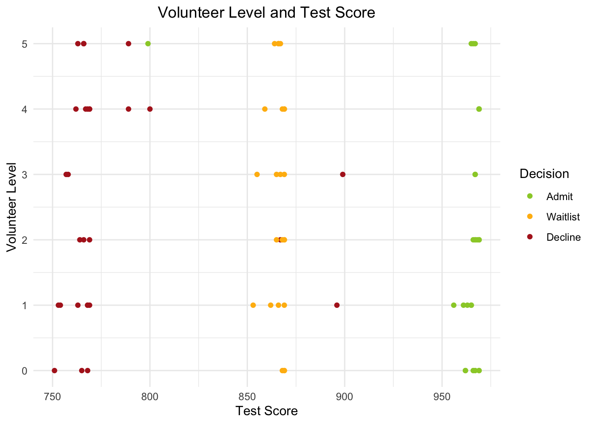
Students with a wide range of volunteer levels were admitted, waitlisted, and declined. There does not appear to be a relationship between volunteer level and test score.
Conclusion
Based on the trends explored above, the most important consideration for this companys hiring team seemed to be the students test scores. With few exceptions, using only the test score for a student we can make a strong prediction for whether or not they were admitted.